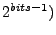
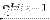

| Parameter | Variable | Description |
|---|---|---|
| Counter Length (2 |
CounterBits | Specifies the number of bits (and the final count output of . |
| Port | Dir. | Data Type | Description |
|---|---|---|---|
| en | in | ??? | Step the counter by 1 unless addr=. |
| rst | in | ??? | Reset counter to 0. |
| addr | out | ??? | Current output of the counter. |
| we | out | Boolean | Outputs boolean true just before addr is incremented. |
| done | out | Boolean | Outputs boolean true when a final en is asserted and addr=. |
This document was generated using the LaTeX2HTML translator Version 2002-2-1 (1.71)
Copyright © 1993, 1994, 1995, 1996,
Nikos Drakos,
Computer Based Learning Unit, University of Leeds.
Copyright © 1997, 1998, 1999,
Ross Moore,
Mathematics Department, Macquarie University, Sydney.
The command line arguments were:
latex2html -local_icons -split 1 sp_freeze_cntr.tex
The translation was initiated by Documentor on 2008-12-21